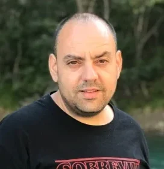
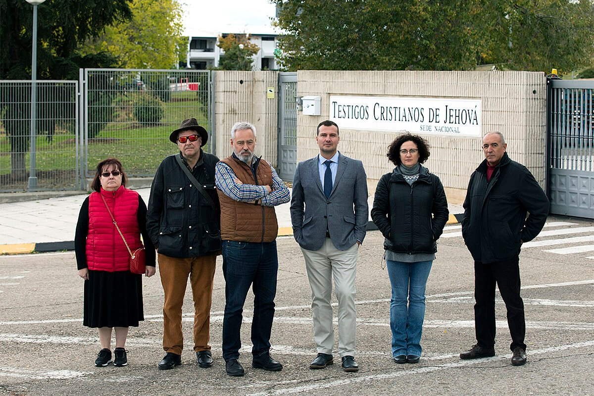
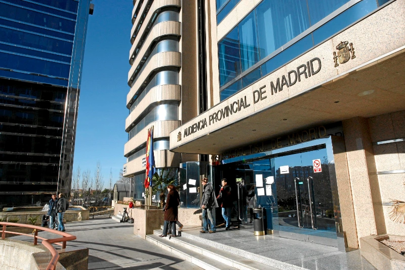
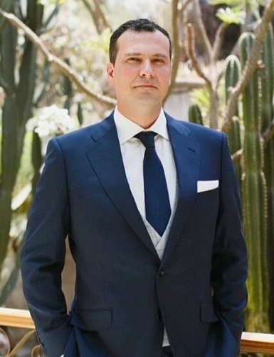

Samuel Ferrando
PresidenteEx testigo y ex anciano de congregación; liderazgo institucional y público.
Víctimas organizadas, respaldo experto, acción institucional y transparencia documental para defender derechos y visibilizar el daño.

El valor diferencial no es solo visual: es autenticidad. La foto real de la asociación tiene más fuerza que cualquier imagen genérica.
La confianza crece cuando la asociación muestra desde el principio qué la respalda: prensa, documentos, sentencias, expertos y comunidad.

El trabajo jurídico se presenta como evidencia pública y como defensa de la asociación.
La cobertura mediática ayuda a explicar el ostracismo fuera del entorno de las víctimas.
Estatutos, cuentas y vías de contacto institucional accesibles desde el primer recorrido.
Nadie debería elegir entre libertad y familia.
Una idea sencilla ordena la narrativa: apoyo emocional, denuncia social y defensa de derechos fundamentales.
La junta y los colaboradores expertos aparecen como confianza visible: personas reales, cargos claros y experiencia acreditada.

Ex testigo y ex anciano de congregación; liderazgo institucional y público.
Coordinación de defensa, acompañamiento y sensibilización pública.

Especialista jurídico en sectarismo y abuso de debilidad.
Investigador y clínico especializado en derivas sectarias.
Los documentos importantes se convierten en entradas claras, escaneables y fáciles de abrir.
Acceso directo a las normas internas y marco de funcionamiento de la asociación.
Ver documentoEstado económico, ingresos, gastos y documentación de gestión anual.
Ver cuentasVía clara para comunicar irregularidades o solicitar información institucional.
Contactar